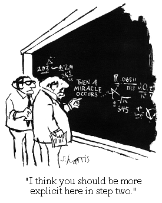

Paradox one
Over the very time we were clearing away the detritus of the various collectivist institutions we cobbled together under the name of the Australian Settlement, or 'protection all round', while we proceeded with economic reform by deregulating markets to try to optimise the contribution of competitive forces, a whole range of things turned up in the in tray which were in effect new and very important public goods (or bads) - which markets might be expected to deal with badly. They include Bads
- the threat of global pandemics
- the threat of global warming
- post cold war nuclear proliferation
Goods
- software and other 'content' or intellectual products (e=mc2) that in principle can be distributed at negligible marginal cost
- the internet - a means of doing this and much else such as
- goods produced using 'open source' methods of production
And an old public good that we'd come to take for granted is pressing itself on our imagination as I write this - that public good is the liquidity and solvency of the financial system.
Paradox Two.
At least with regard to the new public (knowledge) goods, although much of the basic technology, and the IT architecture that made the new world of public intellectual goods possible had heavy public sector involvement, much of the rest of it is provided by private agents operating in a (reasonably) competitive market. That's a paradox because, at least in principle, public goods are supposed to be the metier of government, and a problem for private providers who can't fund public good provision adequately because the good to be provided will be available to all, so there is no practical way of measuring how much people want the good, and so getting them to participate in its funding. Of course Microsoft was an early generator of a public good which was a software standard which captured network externalities - you can send me your MS Word document and I can edit it and send it back. But that's been fairly unsatisfactory because Microsoft has a distinctly 'old school' philosophy of trying to maximise profit by monopolising and manipulating the public goods it produces. Having created the standard Microsoft now charges us all pure economic rent for access to it.
Wikipedia is a classic public good and it is provided via philanthropy and social networking not by government. Again, the textbook would say that this is all very nice, but that Wikipedia would be inadequately resourced, in the same way that World Vision is inadequately resourced to ameliorate poverty and suffering around the world.
Open source software operates a little via philanthropic motives, but mostly as a kind of 'solutions exchange' where people or firms that have coded to solve some practical problem donate that code back to a 'master project' - Linux, Firefox or Apache, whatever - in order to try to ensure that that code finds its way into new distributions of the project - because if it doesn't they have to spend time recoding for each new distribution.
And Google is a voracious profit driven organisation with at least as much megalomania as Microsoft and yet, true to its slogan, it does a lot less evil. It creates massive amounts of value, (think Google search, maps, docs and various bits of software) it then gives almost all of this value it's created away and makes money in the margins of the value it's created.In theory the public sector should be well placed to lead the creation of value through public goods on the net and elsewhere. But alas that's only in theory. But government is very bad at pretty much all the kinds of things that are providing public goods to us over the internet (other than the original research and development and institutional networking that created it in the first place).It is encrusted with a vast panoply of institutions which make it inefficient at a wide range of things.
Some of this is inevitable and in that (limited) sense welcome. Governments can't improvise willy nilly like a small business can. But that's because they have to demonstrate probity and integrity in what they do. And governments are big organisations so that slows them down, as it does private firms. Governments are also bastions of unionism - in many ways the last place where unions are strong. And that brings with it lots of inefficiencies, rigidities and conspiracies against outsiders.
Governments have problems with sticking to things for the long term - and that's not necessarily such a bad thing given another of their characteristics - they're often more unresponsive to feedback than markets.
Still, I think governments could help with this new explosion of public goods more than they have, though the driving force will continue to be individuals, firms and civil society. I'll expand on that in . . . Part Two.
"Open source software operates a little via philanthropic motives, but mostly as a kind of solutions exchange where people or firms that have coded to solve some practical problem donate that code back to a master project - Linux, Firefox or Apache, whatever - in order to try to ensure that that code finds its way into new distributions of the project - because if it doesnt they have to spend time recoding for each new distribution."
I think that's a debatable statement. Its more realistically descibed as very low cost philanthropy. Take a Perl library as an example. Someone creates it in order to solve a problem they are faced with. It has some value to people who will be faced with the same problem so in theory that person could maintain the copyright and sell it to someone. But in practice that would be impossible. If they tried to do that there is a very good chance that someone else would create an alternative free library that did the same thing and so the origninal, now proprietry library, would be worth nothing. Worse still the open source library would soon be better than the private one as other people contributed to it and the original author would get no money, and most importantly of all, get no credit for creating his library.
If you create something open source, you probably can't sell it and you can't stop other people from creating the same thing, so you may as well give it away and at least get the credit for making it. Or put another way, Open Source Software is created by programmers trading code for social status among other programmers with code that has no practical way of being traded for money.
Thanks SWIO,
After telling me it's a debatable statement, you then agreed with it at some length.
Demand for oil outstripping supply. In an economy based around billions of petrol guzzling cars, this definitely has to be another Bad for the in-tray.
I agree. If this ever happened, it would be a disaster.
Happily, Caroline will be dead before it does, so she can sleep soundly.
~ ~ ~
Surely that can't be a significant factor. Especially as opposed to all the other reasons you list.
Maybe one resolution/explanation lies in capitalism making us more cooperative:
Caroline,
I was using the expression 'public good' and 'public bad' in a technical sense the way they're defined in economics. It might be 'bad' that we run out of gas, but there aint nothing 'public' about it. Who pays when you go to the gas station, and who benefits. Mostly you in each case - though there may be some externalities, they're fairly trivial and can be dealt with relatively easily.
Two words - paragraph breaks!
Not for long. The market is actually sorting this out for us. In a classic case of over-reach, Microsoft now demand so much money for this utility that it's cheaper for companies and governments to collaboratively fund the development of work-alike competitors like OpenOffice. I think this mechanism is the under reported side of open source software - that it can only arise and flourish where the competition is able to extract excessive rents. Basically, it's a problem that is (imperfectly) correcting itself.
* the threat of global pandemics
* the threat of global warming
* post cold war nuclear proliferation
How were any of these less risky during the relatively closed economies of the 50's and 60's?
Nicholas, yes I suppose I don't know what is meant by public in an economic sense or probably any other sense. Air is still public? I looked at your Bad list and thought of the finite nature of the Earth's resources. I now understand, silly me, that they don't belong to the public, they belong to companies. Geez what a klutz!
And thanks Patrick. 2042 is when I reckon I'll be taking my leave of the place (God willing--no doubt). I'll hold you personally responsible if petrol proves to be beyond my ability to purchase the stuff (somewhere around the $5.00 p/l mark), before that time. Oh and presumably the sun will still be rising in 34 years time. . . .
I have to go now.
Demand can't outstrip supply. They are the same coin turned over. You can't consume that which is not available. And mere desire outstrips supply most days of the week. Our supply of oil may dwindle but if so then our demand will also.
Well, that could be for a lot of reasons. If 'demand' genuinely outstripped 'supply' (in light of Terje's point - defined as if people genuinely needed and thus were willing to bid increasing amounts for greater quantities of oil than could be produced), oil would probably cost some orders of magnitude more than your price.
But it could easily reach your price just because taxes were raised, for example. It could also reach that price because everyone drives electric cars on a nuclear-powered grid.
This appears a safe assumption. Btw, sunlight is a public good.
? As I understand it yes, air is a public good.
Please note that seemingly public goods are often best protected by private ownership - a result of 'the tragedy of the commons' - this may upset you.
The following paragraph from Wikipedia may assist you:
Caroline,
It's not to do with ownership - it's to do with the characteristics of the good or service. Here's an explanation.
Thanks guys, but I remain unconvinced and will probably always be 'tragically common' in my granted, crude understanding of economics. There's no helping some. However, to quote the wikipedia page that Nicholas pointed me to:
Obviously demand for cake will always be with us, but supply may not always be able to meet it. There goes the coin argument TerjeP. Nevertheless, I can almost see where you're coming from. Demand may take a sharp dive when it is realised there's none left, but for a while it will remain unsatiated.
This was interesting, and cleared up the air 'good'.
Can you give me a few examples?
Caroline
Patrick is referring to a complex and unresolved issue. Hardin argued that commons had to be managed, and discussed various methods of management. Privatisation is one method, regulation is another, transfer to government ownership another, etc. There is no single "best" solution that applies in all situations. Thatcherites and Friedmanites argue that privatisation is the solution when it suits them, which usually means a situation of private profit at public expense.
But there are readily understood examples where privatisation is arguably the best solution. The sale of existing public housing to the existing tennants can be a good idea. But there are important provisos to that, and in some cases it might not be a good idea. It's not possible to make the generalisation that because the sale of public housing to existing tenants is a good idea in some cases, that selling all existing public housing to all comers (i.e. to people other than the existing tennants) is a good idea in all cases. That generalisation involves a reneging on pre-existing express or implied promises, which the existing tennants could arguably regard as a theft.
BTW, Caroline, in case it's not clear, I'm arguing on your side, not Patrick's. :)
Another BTW. I haven't commented on Nick's original post, because it seems to me to be rambling nonsense. It's "random fact", "random opinion", "random fact", "random opinion", finishing with "wait till episode 2" where all will be explained.
Brad Delong tried this approach recently with his Cuba series, and his reputation was not enhanced thereby.
Note that I'm saying this as (generally) a fan of both Nick and Brad.
Caroline,
The article on public goods in Wikipedia is no great shakes - just the quickest thing I could find. The last sentence you have quoted seems to have disappeared - and a good thing too. I'm not sure I understand what it's getting at. The classic public good - used in textbooks is defence. If defence forces defend a country everyone benefits (other than those who want to be invaded I guess). It's non-excludable - because if you defend a country you defend everyone in it. It's also non-rival in the sense that the defence of person A doesn't hinder the defence of person B if they're in the same country or city being defended. The defence of one is defence of the other. Defence is hard to provide privately.
But as I said in the post, a lot of public goods - or very near public goods - are provided privately. Thus for instance broadcast TV is a public good - your picking up the signal does not diminish it and (at least before scrambling technologies were introduced) it was difficult to exclude non-payers. But it was provided privately through subjecting us to advertising. A lot of activity on the net is public good in nature - like this blog - and it's not provided by govt.
Open source software is a near public good privately provided.
SJ,
I probably shouldn't bite, but Jeez. What's the story.
I simply expounded two somewhat paradoxical developments. There are a bunch of new public goods and bads around - or public goods and bads that have become more important. And this has occured while the emphasis on reform has been on intensifying private competition, and less on the provision of public goods. I haven't suggested that this was bad, just that it's a bit ironic, or paradoxical.
And the public sector isn't much good at helping in the provision of the burgeoning new public good of the internet.
What's random about any of that? They're just simple observations. I would have thought they're pretty unarguable in the broad - unless you go out of your way to imagine I'm doing something that I'm not trying to do.
And if you think 'all will be explained' in part two, you should read the post again. A much more modest claim was made - basically that I'll continue with a few suggestions. They'll be pretty low key I assure you.
(BTW, in checking out the post, I finally understand what Gummo was talking about with carriage returns. I put paragraph returns in - but I guess Wordpress took them out again. Will fix.)
I don't have any stronger claim than "I can't understand the point you're trying to make". I shouldn't have called it nonsense, but I can't see anything that ties the whole lot together. Maybe there isn't anything. I can't tell.
Re. #12: Have Terje and Brendan Halfweeg ever been seen together?
Governments are also bastions of unionism - in many ways the last place where unions are strong. And that brings with it lots of inefficiencies, rigidities and conspiracies against outsiders.
Nope - unions are strong elsewhere. And they will continue to be. We're not in Hayekland yet, as I'm sure the Soons and Jc's of the blogosphere will tell you likewise.
No we're not unfortunately.
Hayek wouldn't have a problem with unions or any association as long as there weren't any laws protecting such guilds.
We're not here to please Hayek, Jc.
Nicholas,
As I have been arguing for a long time there is a way that governments can provide a framework for spending on public goods. At the moment governments collect taxes, budget for schools or whatever, then allocate the money to those services and give (or sell) the services.
The other way is for the government to collect the taxes, budget the amount to spend, but give it back to the citizens who have to spend the money they receive (tagged money) on the services as budgeted. Sellers of services in most cases already exist but if not they will soon appear if there are buyers.
That is we have a market place for the services and we have buyers with tagged money to buy. As we know market places are an efficient way to allocate services.
The details will vary for different services but the principle remains the same.
It is all about spending not about prices.
Kevin, NO!
What you will have is some people consuming more than they need, and their welfare decreasing as a result (ie effectively a pay-cut to them) and (I believe) other people consuming less than they need just because a) there is a socially constructed expectation of the correct expenditure, and b) after all their dollars have been 'tagged' they don't have enough discretionary expenditure.
I know you are not a socialist but the heart of most socialists is a deep unhappiness with the fact that very few people share their priorities and no-one thinks that the socialist in question knows better than they do.
Mandatory solutions are not the answer.
This, regrettably, would very quickly be true under your system. In case you are wondering, it would be a very bad outcome since it should be all about the prices. Prices are one of the most valuable pieces of information available to us. For example, a lot of externalities (such as the pollution so dear to Caroline's heart) are a question of incomplete pricing.
SJ:
I also don't understand why there is a paradox involved. Other than that, though, I thought NG's post was reasonably clear. If I have understood is point is that we have spent the last decades focusing on private goods but public goods have actually emerged as arguably more important, without our focusing on them or on the systems we should have in place to foster/protect them.
Nick:
The BBC, most countries' weather and travel information services and online laws and cases are examples of public goods that the public sector does a good job of providing, imho.
Isn't this kinda the point? Government should do b well, and indeed has done. Private sector should do a well, and indeed has done?
The closest thing I can see to a paradox is that public goods are increasingly provided by private firms - but what is paradoxical about that??
Patrick,
Please think it through. Of course prices are important but the price is covered by the market place where the expenditure is on the public good. The amount of money distributed is the same as we currently distribute through government budgeting. There is NOT an infinite supply. You make assumptions from your current mindset.
What happens now.
Governments collect fees and taxes and someone somewhere decides that a certain amount of money will be spent on say health. The money is then distributed to suppliers of services like hospitals, doctors, etc.
What I am suggesting is that the first sentence remains but instead of the money going down the chain the money is given to the population and moves up the chain. That is, we give the money to the population and they have to spend the money given on health.
The different approach will result in massive savings because we know that markets are better at allocating resources than our current command and control.
This is nothing to do with socialism or any other label. It is all about efficient allocation of funds. The best way is to give choice at the lowest level possible in terms of spending. That is why I say it is the spending that is important not the prices which will take care of themselves if there is a free market.
The trap economists have fallen into is in believing that prices reflect value. As a person who sets prices I can tell you now that price has little relation to value except in a free and unconstrained market with the buyers with perfect knowledge.
I don't think you know what value means. It does not mean 'a bargain'.
Patrick,
You don't bother reading or I suspect trying to understand what is said. No one said anything about bargains.
Price is used as one of the ways for a person to decide whether to take part in a transaction with another person or entity. I heard a good description that economics is about the science of choice and I think that is a pretty good one. People make choices for all sorts of reasons and one of those for some people some of the time happens to be price. So price is useful as one of the things you use when making a choice. In particular it enables you to choose between different alternatives of the same offering. It is however not the only thing to consider when making a choice.
If falls down when people think it is the best mechanism for all investment and for all allocation of funds where there is market failure of some form or other.
Emissions Permits Trading is a good example of this type of thinking and concentration on price. In simple terms the theory is that if we increase the price of polluting energy by inventing a product called Emissions Permits then we will get lots of investment in renewable energy infrastructure because the price of Emissions Permits will increase the price of polluting energy which in turn will make it attractive for people to invest in renewable energy infrastructure. What a long winded, complicated way of getting investment in renewable energy infrastructure.
Surely all we have to do is to say. We need to invest about $20Billion dollars a year in renewable energy. Now we ask the question what is the most efficient way of spending that amount on investment in renewable energy infrastructure. I can prove to you that increasing the price of all polluting energy is not the most efficient way. The most efficient way is directly through the existing market place in renewable energy infrastructure. One way is to give potential buyers of renewable energy infrastructure some money and let them purchase renewable energy infrastructure in the market place of renewable energy infrastructure. Note I am NOT talking about purchasing renewable energy but I am talking about the power stations etc to produce it or investing in ways to save energy. How people are given the money and who gets it are equity problems and as you know I think a good way is through Energy Rewards where you give the money to those who use little energy. That is "Reward the frugal and charge the profligate".
Patrick, SJ,
All I said was that, as we were rolling back the state and expanding what private competition achieved, public goods were becoming more important. That's a paradox. If you don't think so, bully for you, but I can't see why that's hard to see.
Public goods are typically not provided well by private enterprise. But it turns out that the private sector seems better at providing content on the net and open source software, both of which are pretty much as close to public goods as things in the real world get.
So there you are, two paradoxes. They're not monumental, amazing paradoxes. They don't disclose any bad state of the world, just a couple of little garden variety paradoxes. Can't see the problem in any of those observations.
Am I missing something?
I liked the post, NG, I just didn't think that
was a paradox in the sense of an argument that apparently derives self-contradictory conclusions by valid deduction from acceptable premises.
But looking at a dictionary apparently people also call 'a tenet contrary to received opinion' a paradox!! If that is what you meant then you are right and I apologise.
I do look forward to part II, btw.
Thx Patrick - you're a gentleman. I was never offended, just thought it was odd that a big deal was being made of whether these things were 'paradoxes'. They're not paradoxes in the technical sense like Zeno's paradox is a paradox. But they're paradoxes in the sense of there being a tension between two sides - we've strengthened private competition at a time when (I'm assrting) the economy and our society has become (only somewhat) more weighted towards public goods. Perhaps ironic might be a better expression since I wasn't seeking to use the tension to argue against (most of) what we'd done in extending the reach of competition.
As for part two - well the problem is time :(
And the fact that I'm already up to part three in my own mind :)
Paradox is fine. The problem was that Nicholas's 'becoming more important' was a bit imprecise. He meant that changes in technology are such that a larger proportion of GDP is in the form of public goods in the sense that they are non-rival.
Nicholas,
I would suggest that your paradoxes are examples of the "tragedy of the commons". I would also suggest that governments are not particularly good at solving these problems with their current tools. In fact it almost seems that everytime a government tries to act in the public interest they tend to end up stuffing it up.
What we need are mechanisms that enable us to both benefit as individuals and to share the benefits with others of community goods and in the removal of public bads. Once you put in place these mechanisms then the paradoxes go away.
The common way of thinking about things economic things seems to be based around the idea of each person trying to maximize their own benefit. In the real world that is not the way we operate. We are a lot more sophisticated than that and in particular we have the concept of "fairness" in our transactions.
If we can build fairness into our economic transactions then we can remove many of your paradoxes because we can solve the tragedy of the commons.
We would all be happy to switch to renewables as long as everyone else did. We would be happy to contribute to stopping pandemics as long as we weren't the only ones. We are happy to share in open source software as long as others do the same and don't take advantage of our actions (which by the way is why it works). We are happy to contribute to Wikipedia as long as others do too. We are happy to contribute to blogs as long as others do too.
Our society is full of examples of volunteers, people working for no benefit for the community good. We have this need to work with others and to do things for others. All religions have the belief of "Do unto others as you would have them do unto you" - or "you scratch my back and I will scratch you" (but if you don't scratch my back then I will try to kick your back:)
I would suggest that governments have forgotten that they are there for the public and often seem to be interested in their own survival and to hell with the public. For example I will start to believe governments when they stop taking advantage of the system for their own ends and start to do things like - make freedom of information truly free. Make the voting system and the funding of elections so that it opens up diversity in candidates. Stop pandering to the large economic interests like the banks, energy and media companies and people who tend to give big donations. Stop giving what some people call plaque grants. That is you will get a government grant if some minister can put a plaque on it.
What we want are ways that we can cooperate as well as ways we can compete. The lessons of evolution are those that cooperate win over those that compete.
OK. Makes a bit more sense now. Thanks for taking the time to explain, Nick.